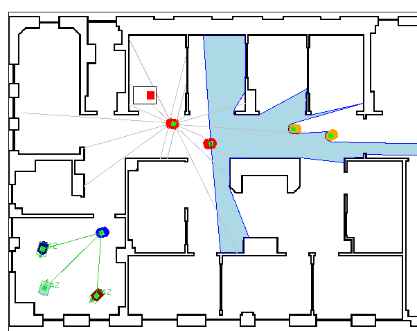

|
| |
| Home | |
| FAQ | |
| Player | |
| Utilities | |
| Stage | |
| Gazebo | |
| Contrib | |
| Documentation | |
| Publications | |
| Contributors | |
| Users |
| Project |
| Download |
| Bugs/Feedback |
| Mailing lists |
| Radish |
| Old news |
| Old stuff |
|
Stage 2D multiple robot simulator |
{kind=link}
Stage simulates a population of mobile robots, sensors and objects in a two-dimensional bitmapped environment. Stage is designed to support research into multi-agent autonomous systems, so it provides fairly simple, computationally cheap models of lots of devices rather than attempting to emulate any device with great fidelity. We have found this to be a useful approach.
libstageplugin
Stage is most commonly used a a Player plugin module, providing populations of virtual devices for Player. Users write robot controllers and sensor algorithms as 'clients' to the Player 'server'. Typically, clients cannot tell the difference between the real robot devices and their simulated Stage equivalents (unless they try very hard). We have found that Player clients developed using Stage will work with little or no modification with the real robots and vice versa. Thus Stage allows rapid prototyping of controllers destined for real robots. Stage also allows experiments with realistic robot devices you don't happen to have. Various sensors and actuators are provided, including sonar, scanning laser rangefinders, vision (color blob detection), odometry, and a differential steer robot base.
libstage
Stage can also be used as a C library to provide a robot simulation inside your own programs. This is useful if Player is not suitable for your needs, or if you want custom simulation models based on a well-known simulation engine.
Screenshots
Stage 2.0.0a
Stage 1.6

Stage 1.3